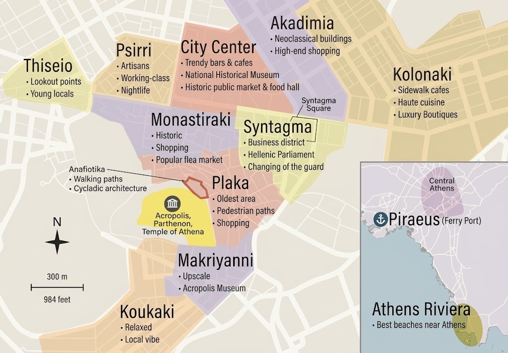

Athens: friends' picks
The neighbourhoods

Psyri & Monastiraki12 places · Flea-market lanes, street art, tavernas and bars packed into the old commercial centre.Plaka, Syntagma & historic centre6 places · The oldest, most walkable part of town under the Acropolis. Cocktail institutions hide in its side streets.Gazi, Kerameikos & Metaxourgeio8 places · Former industrial blocks west of the centre: galleries, queer clubs, late bars and new bistros. The most 'alternative' zone.Exarchia, Omonia & north centre11 places · Student, anarchist and literary Athens. It's gritty and political, full of cheap ouzeris and record and book shops.Kolonaki & Lycabettus15 places · The poshest district: museums, galleries, boutiques and smart cafés, with Lycabettus hill rising above.Pangrati, Mets & Ilisia6 places · Residential, local and foodie, east of the Panathenaic Stadium. Many of Athens' best new restaurants are here.Acropolis, Koukaki, Thissio & Petralona10 places · The ancient core and the green hills (Filopappou, Nymphs). Below them are relaxed neighbourhoods with old tavernas.Beyond the centre2 places · Coast (Athens Riviera) and Piraeus: worth a half-day trip.
All places, near you
Browse by type
🏘️ Neighbourhoods7 places🍽️ Eat18 places · +6 also fit☕ Cafés5 places · +9 also fit🍸 Bars14 places · +4 also fit🪩 Clubs8 places · +2 also fit🏛️ Museums9 places🖼️ Galleries4 places · +2 also fit🛍️ Shops3 places⛰️ Walks2 places
Browse by friend
👤 Erhan's picks31 places · 31 Google Maps pins: a sharp list of cocktail bars, natural-wine spots, queer clubs, galleries and museums.👤 Irene's picks27 places · The food-bars-clubs list (via Alex Neophitou) and the neighbourhoods to wander, from Psyrri to Kolonaki.👤 Giulia's picks22 places · Museums, walks (Lycabettus, Filopappou to Petralona), old tavernas, and her friend Maya's shop Indigo.
Start here if you like it alternative
🏘️ Psiri (Psyrri)Neighbourhoods · Psyri🍸 Booze Cooperativa (K.O.T.E.S.)Bars · Psyri · €€🍸 Cantina SocialBars · Psyri · €🍸 TAF - The Art FoundationBars · Psyri · €🛍️ Hyper HypoShops · Psyri🍸 Blue BirdBars · Plaka · €€🍽️ SeychellesEat · Gazi · €€🪩 SMUT AthensClubs · Gazi · €€
What's on
📅 Parties, openings & concerts, 6 Oct to 8 Nov → 📲 Instagram accounts to follow